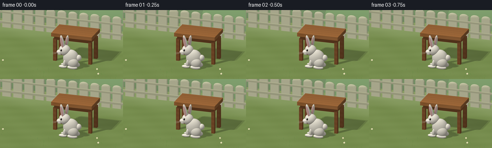
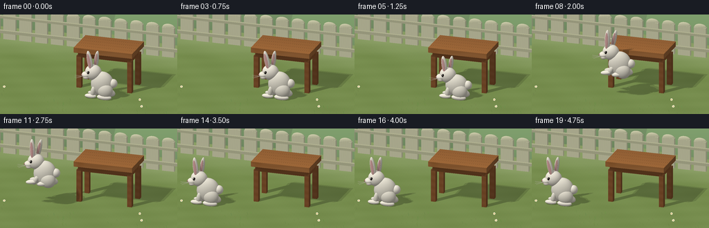

CODING AGENTS AS PIXEL WORLD MODELS
traex/GPT-6.1-Sol · dynamic_spatial_relationship_0019
点击播放 · 原生 RGB 像素
逐轮保存的候选
回放视频、检查图与代码变化。
每份候选均可单独播放。实际图片检查记录在下方工具轨迹中。
候选 01播放与检查图
点击播放 · 原生 RGB 像素


展开代码变化
--- 上一保存版本
+++ 本次保存版本
@@ -0,0 +1,240 @@
+"""Procedural, supersampled RGB animation; only numpy and Pillow are used."""
+from pathlib import Path
+import math
+import numpy as np
+from PIL import Image, ImageDraw, ImageFilter
+import artifact_io
+
+ROOT = Path(__file__).resolve().parent
+W,H,S = 256,144,3
+WW,HH = W*S,H*S
+# A locked, mildly elevated orthographic camera.
+CAM=np.array([3.0,4.2,9.0],np.float32)
+TARGET=np.array([0.15,.85,.2],np.float32)
+FWD=TARGET-CAM; FWD/=np.linalg.norm(FWD)
+RIGHT=np.cross(FWD,[0,1,0]); RIGHT=RIGHT/np.linalg.norm(RIGHT)
+UP=np.cross(RIGHT,FWD)
+view_width=6.8
+xx,yy=np.meshgrid((np.arange(WW)+.5)/WW-.5,.5-(np.arange(HH)+.5)/HH)
+ORIG=(CAM+xx[...,None]*view_width*RIGHT+yy[...,None]*view_width*HH/WW*UP).reshape(-1,3).astype(np.float32)
+DIR=FWD.astype(np.float32)
+LIGHT=np.array([-3.5,7,5],np.float32); LIGHT/=np.linalg.norm(LIGHT)
+
+
+def rotation_z(a):
+ c,s=math.cos(a),math.sin(a)
+ return np.array([[c,-s,0],[s,c,0],[0,0,1]],np.float32)
+
+def ell(c,r,col,angle=0,kind='plain'):
+ rot=rotation_z(angle)
+ return {'type':'ell','c':np.array(c,np.float32),'r':np.array(r,np.float32),'rot':rot,'col':np.array(col,np.float32),'kind':kind}
+
+def box(c,r,col,kind='wood'):
+ return {'type':'box','c':np.array(c,np.float32),'r':np.array(r,np.float32),'col':np.array(col,np.float32),'kind':kind}
+
+
+def hit(obj, origins, direction, normals=False):
+ q=origins-obj['c']
+ if obj['type']=='ell':
+ a=(q@obj['rot'])/obj['r']
+ d=(direction@obj['rot'])/obj['r']
+ aa=np.sum(d*d,axis=-1)
+ bb=np.sum(a*d,axis=-1)
+ cc=np.sum(a*a,axis=-1)-1
+ disc=bb*bb-aa*cc
+ t=(-bb-np.sqrt(np.maximum(disc,0)))/aa
+ t=np.where((disc>=0)&(t>.001),t,np.inf)
+ return t
+ inv=1/np.where(np.abs(direction)<1e-8,1e-8,direction)
+ a=(-obj['r']-q)*inv; b=(obj['r']-q)*inv
+ t0=np.max(np.minimum(a,b),axis=-1)
+ t1=np.min(np.maximum(a,b),axis=-1)
+ return np.where((t1>=t0)&(t0>.001),t0,np.inf)
+
+STATIC=[]
+# Rounded distant hedges and a restrained garden fence.
+for c,r,color in [((-4,-.4,-7),(5,1.9,2),(99,134,87)),((3,-.5,-7),(6,2.0,2),(106,144,91))]:
+ STATIC.append(ell(c,r,color,kind='leaf'))
+for i in range(18):
+ x=-5.6+i*.64
+ STATIC.append(box((x,.60,-3.8),(.245,.60,.07),(208,202,171),'fence'))
+ STATIC.append(ell((x,1.2,-3.8),(.245,.14,.07),(208,202,171),kind='fence'))
+STATIC += [box((0,.34,-3.64),(6,.055,.06),(180,176,145),'fence'),box((0,.94,-3.64),(6,.045,.06),(180,176,145),'fence')]
+# Table. Individual boards, edge apron, and all four legs make its structure unambiguous.
+TABLE=[]
+for i in range(5):
+ TABLE.append(box((.90,1.57,-.60+i*.30),(1.18,.10,.146),(155+3*i,102+2*i,57+i),'wood'))
+for z in [-.52,.52]:
+ TABLE.append(box((.90,1.37,z),(1.04,.13,.055),(133,82,43),'wood'))
+for x in [-.12,1.92]:
+ TABLE.append(box((x,1.37,0),(.055,.13,.52),(143,89,48),'wood'))
+ for z in [-.5,.5]:
+ TABLE.append(box((x,.65,z),(.092,.65,.092),(138,87,48),'wood'))
+STATIC+=TABLE
+
+
+def shade_objects(objects):
+ n=len(ORIG)
+ ground_t=-ORIG[:,1]/DIR[1]
+ depth=ground_t.copy()
+ ids=np.full(n,-1,np.int16)
+ for i,o in enumerate(objects):
+ t=hit(o,ORIG,DIR)
+ take=t<depth
+ depth[take]=t[take]; ids[take]=i
+ p=ORIG+depth[:,None]*DIR
+ normals=np.zeros_like(p); normals[:,1]=1
+ # Ground has fine natural variation rather than a flat green fill.
+ noise=(np.sin(p[:,0]*81+p[:,2]*54)*np.sin(p[:,0]*53-p[:,2]*83))
+ long=np.sin(p[:,0]*2.3+p[:,2]*1.6)*np.sin(p[:,2]*3.7)
+ colors=np.zeros_like(p)+[126,150,83]
+ colors+=noise[:,None]*3.5+long[:,None]*3
+ specular=np.zeros(n,np.float32)
+ for i,o in enumerate(objects):
+ ix=np.flatnonzero(ids==i)
+ if len(ix)==0: continue
+ q=p[ix]-o['c']
+ if o['type']=='ell':
+ loc=q@o['rot']
+ nn=(loc/o['r']**2)@o['rot'].T
+ nn/=np.linalg.norm(nn,axis=1)[:,None]
+ else:
+ normloc=q/o['r']; ax=np.argmax(np.abs(normloc),axis=1)
+ nn=np.zeros_like(q); nn[np.arange(len(ix)),ax]=np.sign(normloc[np.arange(len(ix)),ax])
+ normals[ix]=nn
+ colors[ix]=o['col']
+ kind=o['kind']
+ if kind=='wood':
+ # Wood fibers run along the length of the tabletop.
+ grain=np.sin(p[ix,2]*82+np.sin(p[ix,0]*3.0)*1.4+p[ix,1]*23)
+ narrow=np.maximum(0,np.sin(p[ix,2]*137+p[ix,0]*1.7))**16
+ colors[ix]+=grain[:,None]*3-narrow[:,None]*8
+ elif kind=='fur':
+ tex=np.sin(p[ix,0]*239+p[ix,1]*171)*np.sin(p[ix,2]*219-p[ix,1]*137)
+ colors[ix]+=tex[:,None]*2.6
+ # Slightly warm shaded coat.
+ elif kind=='fence':
+ colors[ix]+=np.sin(p[ix,0]*90+np.sin(p[ix,1]*5))[:,None]*2
+ elif kind=='leaf':
+ colors[ix]+=np.sin(p[ix,0]*19)*np.sin(p[ix,1]*17)[:,None] if False else 0
+ elif kind=='eye':
+ specular[ix]=1
+ # Directional shadows, lightly softened using two solar directions.
+ shadow=np.zeros(n,np.float32)
+ # Fence/hedges contribute soft ambient scenery, not expensive fine shadows.
+ casters=[o for o in objects if o['kind'] not in ('leaf','fence')]
+ for delta in [-.025,.025]:
+ ld=LIGHT+np.array([delta,0,-delta],np.float32); ld/=np.linalg.norm(ld)
+ origin=p+normals*.007
+ occult=np.zeros(n,bool)
+ for o in casters:
+ occult|=np.isfinite(hit(o,origin,ld))
+ shadow+=occult*.5
+ nd=np.maximum(0,normals@LIGHT)
+ amb=.55+.10*normals[:,1]
+ illum=amb+.38*nd*(1-.78*shadow)
+ rgb=colors*illum[:,None]
+ half=LIGHT-DIR; half/=np.linalg.norm(half)
+ gloss=np.maximum(0,normals@half)**70
+ rgb+=specular[:,None]*gloss[:,None]*190
+ # A little atmospheric perspective on distant scenery.
+ far=np.clip((-p[:,2]-2)/7,0,.25)
+ rgb=rgb*(1-far[:,None])+np.array([194,207,167])*far[:,None]
+ return np.clip(rgb,0,255).astype(np.uint8).reshape(HH,WW,3)
+
+
+def rabbit(frame):
+ t=frame/4
+ lift=0; squash=1; stretch=0
+ if t<1.0:
+ x=1.02
+ elif t<1.5:
+ x=1.02
+ squash=1-.16*math.sin((t-1)/.5*math.pi/2)
+ elif t<=3.25:
+ u=(t-1.5)/1.75
+ x=1.02-2.88*(u*u*(3-2*u))
+ lift=.92*math.sin(math.pi*u)
+ squash=1+.05*math.sin(math.pi*u)
+ stretch=math.sin(math.pi*u)
+ else:
+ x=-1.86
+ squash=1-.09*math.exp(-(t-3.25)*5)*math.sin((t-3.25)*11)
+ z=1.34
+ def pos(dx,y,dz=0): return (x+dx,y*squash+lift,z+dz)
+ ob=[]
+ fur=(233,228,212); pale=(246,240,224)
+ # Far paws and far ear first (depth test handles correct occlusion).
+ ob.append(ell(pos(-.25,.18,-.19),(.115,.23,.095),fur,-.15, 'fur'))
+ ob.append(ell(pos(-.35-.05*stretch,.08+.18*stretch,-.16),(.23,.08,.11),fur,.12*stretch,'fur'))
+ ob.append(ell(pos(.26,.17+.10*stretch,-.14),(.27,.16,.13),fur,-.18,'fur'))
+ # Large, haunched body, distinctive rabbit thigh, and powder-puff tail.
+ ob.append(ell(pos(.49,.61),(.165,.175,.17),pale,kind='fur'))
+ ob.append(ell(pos(.05,.55),(.45,.49*squash,.31),fur,-.15,'fur'))
+ ob.append(ell(pos(.22,.34,.16),(.30,.30,.22),fur,-.15,'fur'))
+ ob.append(ell(pos(.20-.13*stretch,.09+.19*stretch,.23),(.29,.105,.135),pale,.35*stretch,'fur'))
+ ob.append(ell(pos(-.25,.26+.08*stretch,.20),(.105,.23,.115),fur,-.15-.48*stretch,'fur'))
+ ob.append(ell(pos(-.35-.09*stretch,.09+.19*stretch,.23),(.23,.085,.12),pale,.20*stretch,'fur'))
+ # Alert rounded head and long independently tilted ears.
+ ob.append(ell(pos(-.31,.98),(.325,.31,.28),pale,-.08,'fur'))
+ ear_angle=.18+.06*math.sin(t*3)-.23*stretch
+ ob.append(ell(pos(-.23,1.43,-.125),(.094,.40*squash,.087),fur,-.14-.10*stretch,'fur'))
+ ob.append(ell(pos(-.23,1.45,-.052),(.052,.29*squash,.016),(209,163,157),-.14-.10*stretch,'pink'))
+ ob.append(ell(pos(-.42,1.45,.105),(.105,.425*squash,.095),pale,ear_angle,'fur'))
+ ob.append(ell(pos(-.428,1.465,.188),(.060,.322*squash,.018),(222,172,168),ear_angle,'pink'))
+ # Split muzzle, tiny pink nose and bead eyes with white glints.
+ ob.append(ell(pos(-.56,.89,.10),(.18,.125,.185),pale,kind='fur'))
+ ob.append(ell(pos(-.55,.81,.18),(.115,.075,.105),(239,231,215),kind='fur'))
+ ob.append(ell(pos(-.704,.90,.172),(.043,.031,.05),(173,119,119),kind='pink'))
+ ob.append(ell(pos(-.427,1.033,.252),(.055,.063,.024),(28,24,22),-.08,'eye'))
+ ob.append(ell(pos(-.445,1.055,.270),(.015,.018,.011),(255,252,238),kind='plain'))
+ ob.append(ell(pos(-.404,1.011,.272),(.006,.007,.005),(160,147,124),kind='plain'))
+ return ob,(x,z,lift,squash)
+
+
+def project(point):
+ p=np.array(point)-CAM
+ return ((p@RIGHT/view_width+.5)*WW,(.5-p@UP/(view_width*HH/WW))*HH)
+
+
+def details(im,state,frame):
+ x,z,lift,squash=state
+ d=ImageDraw.Draw(im)
+ # Fine, gently splayed whiskers, grounded in the muzzle rather than graphic outlines.
+ base=(x-.655,.86*squash+lift,z+.235)
+ for end in [(-.31,.025,.05),(-.30,-.034,.09),(-.25,-.08,.10)]:
+ p2=(base[0]+end[0],base[1]+end[1],base[2]+end[2])
+ d.line([project(base),project(p2)],fill=(169,165,151),width=1)
+ # A discreet curved mouth below the pink nose.
+ mouth=[(x-.69,.862*squash+lift,z+.20),(x-.658,.825*squash+lift,z+.235),(x-.61,.818*squash+lift,z+.247)]
+ d.line([project(p) for p in mouth],fill=(138,123,111),width=2)
+ # Sparse sunlit foreground grass and tiny daisies at the corners.
+ rng=np.random.default_rng(25)
+ for i in range(125):
+ gx=rng.uniform(-4,4); gz=rng.uniform(1.9,3.5)
+ if abs(gx-1.02)<.65 or abs(gx+1.86)<.65: continue
+ gy=rng.uniform(.04,.105)
+ color=(int(rng.uniform(95,120)),int(rng.uniform(121,149)),int(rng.uniform(61,79)))
+ d.line([project((gx,0,gz)),project((gx-.028,gy,gz))],fill=color,width=1)
+ for gx,gz in [(-2.8,1.6),(-3.1,2.0),(2.6,1.4),(2.9,2.1)]:
+ pt=project((gx,.09,gz)); px,py=pt
+ for a in range(5):
+ ang=a*2*math.pi/5
+ cx,cy=px+3*math.cos(ang),py+3*math.sin(ang)
+ d.ellipse((cx-2,cy-2,cx+2,cy+2),fill=(239,235,209))
+ d.ellipse((px-1.6,py-1.6,px+1.6,py+1.6),fill=(211,175,67))
+ return im
+
+
+def main():
+ frames=[]
+ for f in range(20):
+ objs,state=rabbit(f)
+ image=Image.fromarray(shade_objects(STATIC+objs))
+ image=details(image,state,f)
+ image=image.resize((W,H),Image.Resampling.LANCZOS)
+ frames.append(np.asarray(image,dtype=np.uint8))
+ print('rendered',f,flush=True)
+ artifact_io.save(np.stack(frames),ROOT)
+
+if __name__=='__main__':main()
可观测工具轨迹
实际执行的命令与返回图片。
命令 1exit 0
/bin/bash -lc 'ls -la && cat prompt.txt && cat GENERATION_RULES.md && cat task_spec.json'
命令 2exit 0
/bin/bash -lc "cat artifact_io.py && python - <<'PY'
import numpy,PIL
print('numpy and PIL ready')
PY"命令 3exit 0
/bin/bash -lc "cat > generate.py <<'PY'
\"\"\"Procedural, supersampled RGB animation; only numpy and Pillow are used.\"\"\"
from pathlib import Path
import math
import numpy as np
from PIL import Image, ImageDraw, ImageFilter
import artifact_io
ROOT = Path(__file__).resolve().parent
W,H,S = 256,144,3
WW,HH = W*S,H*S
# A locked, mildly elevated orthographic camera.
CAM=np.array([3.0,4.2,9.0],np.float32)
TARGET=np.array([0.15,.85,.2],np.float32)
FWD=TARGET-CAM; FWD/=np.linalg.norm(FWD)
RIGHT=np.cross(FWD,[0,1,0]); RIGHT=RIGHT/np.linalg.norm(RIGHT)
UP=np.cross(RIGHT,FWD)
view_width=6.8
xx,yy=np.meshgrid((np.arange(WW)+.5)/WW-.5,.5-(np.arange(HH)+.5)/HH)
ORIG=(CAM+xx[...,None]*view_width*RIGHT+yy[...,None]*view_width*HH/WW*UP).reshape(-1,3).astype(np.float32)
DIR=FWD.astype(np.float32)
LIGHT=np.array([-3.5,7,5],np.float32); LIGHT/=np.linalg.norm(LIGHT)
def rotation_z(a):
c,s=math.cos(a),math.sin(a)
return np.array([[c,-s,0],[s,c,0],[0,0,1]],np.float32)
def ell(c,r,col,angle=0,kind='plain'):
rot=rotation_z(angle)
return {'type':'ell','c':np.array(c,np.float32),'r':np.array(r,np.float32),'rot':rot,'col':np.array(col,np.float32),'kind':kind}
def box(c,r,col,kind='wood'):
return {'type':'box','c':np.array(c,np.float32),'r':np.array(r,np.float32),'col':np.array(col,np.float32),'kind':kind}
def hit(obj, origins, direction, normals=False):
q=origins-obj['c']
if obj['type']=='ell':
a=(q@obj['rot'])/obj['r']
d=(direction@obj['rot'])/obj['r']
aa=np.sum(d*d,axis=-1)
bb=np.sum(a*d,axis=-1)
cc=np.sum(a*a,axis=-1)-1
disc=bb*bb-aa*cc
t=(-bb-np.sqrt(np.maximum(disc,0)))/aa
t=np.where((disc>=0)&(t>.001),t,np.inf)
return t
inv=1/np.where(np.abs(direction)<1e-8,1e-8,direction)
a=(-obj['r']-q)*inv; b=(obj['r']-q)*inv
t0=np.max(np.minimum(a,b),axis=-1)
t1=np.min(np.maximum(a,b),axis=-1)
return np.where((t1>=t0)&(t0>.001),t0,np.inf)
STATIC=[]
# Rounded distant hedges and a restrained garden fence.
for c,r,color in [((-4,-.4,-7),(5,1.9,2),(99,134,87)),((3,-.5,-7),(6,2.0,2),(106,144,91))]:
STATIC.append(ell(c,r,color,kind='leaf'))
for i in range(18):
x=-5.6+i*.64
STATIC.append(box((x,.60,-3.8),(.245,.60,.07),(208,202,171),'fence'))
STATIC.append(ell((x,1.2,-3.8),(.245,.14,.07),(208,202,171),kind='fence'))
STATIC += [box((0,.34,-3.64),(6,.055,.06),(180,176,145),'fence'),box((0,.94,-3.64),(6,.045,.06),(180,176,145),'fence')]
# Table. Individual boards, edge apron, and all four legs make its structure unambiguous.
TABLE=[]
for i in range(5):
TABLE.append(box((.90,1.57,-.60+i*.30),(1.18,.10,.146),(155+3*i,102+2*i,57+i),'wood'))
for z in [-.52,.52]:
TABLE.append(box((.90,1.37,z),(1.04,.13,.055),(133,82,43),'wood'))
for x in [-.12,1.92]:
TABLE.append(box((x,1.37,0),(.055,.13,.52),(143,89,48),'wood'))
for z in [-.5,.5]:
TABLE.append(box((x,.65,z),(.092,.65,.092),(138,87,48),'wood'))
STATIC+=TABLE
def shade_objects(objects):
n=len(ORIG)
ground_t=-ORIG[:,1]/DIR[1]
depth=ground_t.copy()
ids=np.full(n,-1,np.int16)
for i,o in enumerate(objects):
t=hit(o,ORIG,DIR)
take=t<depth
depth[take]=t[take]; ids[take]=i
p=ORIG+depth[:,None]*DIR
normals=np.zeros_like(p); normals[:,1]=1
# Ground has fine natural variation rather than a flat green fill.
noise=(np.sin(p[:,0]*81+p[:,2]*54)*np.sin(p[:,0]*53-p[:,2]*83))
long=np.sin(p[:,0]*2.3+p[:,2]*1.6)*np.sin(p[:,2]*3.7)
colors=np.zeros_like(p)+[126,150,83]
colors+=noise[:,None]*3.5+long[:,None]*3
specular=np.zeros(n,np.float32)
for i,o in enumerate(objects):
ix=np.flatnonzero(ids==i)
if len(ix)==0: continue
q=p[ix]-o['c']
if o['type']=='ell':
loc=q@o['rot']
nn=(loc/o['r']**2)@o['rot'].T
nn/=np.linalg.norm(nn,axis=1)[:,None]
else:
normloc=q/o['r']; ax=np.argmax(np.abs(normloc),axis=1)
nn=np.zeros_like(q); nn[np.arange(len(ix)),ax]=np.sign(normloc[np.arange(len(ix)),ax])
normals[ix]=nn
colors[ix]=o['col']
kind=o['kind']
if kind=='wood':
# Wood fibers run along the length of the tabletop.
grain=np.sin(p[ix,2]*82+np.sin(p[ix,0]*3.0)*1.4+p[ix,1]*23)
narrow=np.maximum(0,np.sin(p[ix,2]*137+p[ix,0]*1.7))**16
colors[ix]+=grain[:,None]*3-narrow[:,None]*8
elif kind=='fur':
tex=np.sin(p[ix,0]*239+p[ix,1]*171)*np.sin(p[ix,2]*219-p[ix,1]*137)
colors[ix]+=tex[:,None]*2.6
# Slightly warm shaded coat.
elif kind=='fence':
colors[ix]+=np.sin(p[ix,0]*90+np.sin(p[ix,1]*5))[:,None]*2
elif kind=='leaf':
colors[ix]+=np.sin(p[ix,0]*19)*np.sin(p[ix,1]*17)[:,None] if False else 0
elif kind=='eye':
specular[ix]=1
# Directional shadows, lightly softened using two solar directions.
shadow=np.zeros(n,np.float32)
# Fence/hedges contribute soft ambient scenery, not expensive fine shadows.
casters=[o for o in objects if o['kind'] not in ('leaf','fence')]
for delta in [-.025,.025]:
ld=LIGHT+np.array([delta,0,-delta],np.float32); ld/=np.linalg.norm(ld)
origin=p+normals*.007
occult=np.zeros(n,bool)
for o in casters:
occult|=np.isfinite(hit(o,origin,ld))
shadow+=occult*.5
nd=np.maximum(0,normals@LIGHT)
amb=.55+.10*normals[:,1]
illum=amb+.38*nd*(1-.78*shadow)
rgb=colors*illum[:,None]
half=LIGHT-DIR; half/=np.linalg.norm(half)
gloss=np.maximum(0,normals@half)**70
rgb+=specular[:,None]*gloss[:,None]*190
# A little atmospheric perspective on distant scenery.
far=np.clip((-p[:,2]-2)/7,0,.25)
rgb=rgb*(1-far[:,None])+np.array([194,207,167])*far[:,None]
return np.clip(rgb,0,255).astype(np.uint8).reshape(HH,WW,3)
def rabbit(frame):
t=frame/4
lift=0; squash=1; stretch=0
if t<1.0:
x=1.02
elif t<1.5:
x=1.02
squash=1-.16*math.sin((t-1)/.5*math.pi/2)
elif t<=3.25:
u=(t-1.5)/1.75
x=1.02-2.88*(u*u*(3-2*u))
lift=.92*math.sin(math.pi*u)
squash=1+.05*math.sin(math.pi*u)
stretch=math.sin(math.pi*u)
else:
x=-1.86
squash=1-.09*math.exp(-(t-3.25)*5)*math.sin((t-3.25)*11)
z=1.34
def pos(dx,y,dz=0): return (x+dx,y*squash+lift,z+dz)
ob=[]
fur=(233,228,212); pale=(246,240,224)
# Far paws and far ear first (depth test handles correct occlusion).
ob.append(ell(pos(-.25,.18,-.19),(.115,.23,.095),fur,-.15, 'fur'))
ob.append(ell(pos(-.35-.05*stretch,.08+.18*stretch,-.16),(.23,.08,.11),fur,.12*stretch,'fur'))
ob.append(ell(pos(.26,.17+.10*stretch,-.14),(.27,.16,.13),fur,-.18,'fur'))
# Large, haunched body, distinctive rabbit thigh, and powder-puff tail.
ob.append(ell(pos(.49,.61),(.165,.175,.17),pale,kind='fur'))
ob.append(ell(pos(.05,.55),(.45,.49*squash,.31),fur,-.15,'fur'))
ob.append(ell(pos(.22,.34,.16),(.30,.30,.22),fur,-.15,'fur'))
ob.append(ell(pos(.20-.13*stretch,.09+.19*stretch,.23),(.29,.105,.135),pale,.35*stretch,'fur'))
ob.append(ell(pos(-.25,.26+.08*stretch,.20),(.105,.23,.115),fur,-.15-.48*stretch,'fur'))
ob.append(ell(pos(-.35-.09*stretch,.09+.19*stretch,.23),(.23,.085,.12),pale,.20*stretch,'fur'))
# Alert rounded head and long independently tilted ears.
ob.append(ell(pos(-.31,.98),(.325,.31,.28),pale,-.08,'fur'))
ear_angle=.18+.06*math.sin(t*3)-.23*stretch
ob.append(ell(pos(-.23,1.43,-.125),(.094,.40*squash,.087),fur,-.14-.10*stretch,'fur'))
ob.append(ell(pos(-.23,1.45,-.052),(.052,.29*squash,.016),(209,163,157),-.14-.10*stretch,'pink'))
ob.append(ell(pos(-.42,1.45,.105),(.105,.425*squash,.095),pale,ear_angle,'fur'))
ob.append(ell(pos(-.428,1.465,.188),(.060,.322*squash,.018),(222,172,168),ear_angle,'pink'))
# Split muzzle, tiny pink nose and bead eyes with white glints.
ob.append(ell(pos(-.56,.89,.10),(.18,.125,.185),pale,kind='fur'))
ob.append(ell(pos(-.55,.81,.18),(.115,.075,.105),(239,231,215),kind='fur'))
ob.append(ell(pos(-.704,.90,.172),(.043,.031,.05),(173,119,119),kind='pink'))
ob.append(ell(pos(-.427,1.033,.252),(.055,.063,.024),(28,24,22),-.08,'eye'))
ob.append(ell(pos(-.445,1.055,.270),(.015,.018,.011),(255,252,238),kind='plain'))
ob.append(ell(pos(-.404,1.011,.272),(.006,.007,.005),(160,147,124),kind='plain'))
return ob,(x,z,lift,squash)
def project(point):
p=np.array(point)-CAM
return ((p@RIGHT/view_width+.5)*WW,(.5-p@UP/(view_width*HH/WW))*HH)
def details(im,state,frame):
x,z,lift,squash=state
d=ImageDraw.Draw(im)
# Fine, gently splayed whiskers, grounded in the muzzle rather than graphic outlines.
base=(x-.655,.86*squash+lift,z+.235)
for end in [(-.31,.025,.05),(-.30,-.034,.09),(-.25,-.08,.10)]:
p2=(base[0]+end[0],base[1]+end[1],base[2]+end[2])
d.line([project(base),project(p2)],fill=(169,165,151),width=1)
# A discreet curved mouth below the pink nose.
mouth=[(x-.69,.862*squash+lift,z+.20),(x-.658,.825*squash+lift,z+.235),(x-.61,.818*squash+lift,z+.247)]
d.line([project(p) for p in mouth],fill=(138,123,111),width=2)
# Sparse sunlit foreground grass and tiny daisies at the corners.
rng=np.random.default_rng(25)
for i in range(125):
gx=rng.uniform(-4,4); gz=rng.uniform(1.9,3.5)
if abs(gx-1.02)<.65 or abs(gx+1.86)<.65: continue
gy=rng.uniform(.04,.105)
color=(int(rng.uniform(95,120)),int(rng.uniform(121,149)),int(rng.uniform(61,79)))
d.line([project((gx,0,gz)),project((gx-.028,gy,gz))],fill=color,width=1)
for gx,gz in [(-2.8,1.6),(-3.1,2.0),(2.6,1.4),(2.9,2.1)]:
pt=project((gx,.09,gz)); px,py=pt
for a in range(5):
ang=a*2*math.pi/5
cx,cy=px+3*math.cos(ang),py+3*math.sin(ang)
d.ellipse((cx-2,cy-2,cx+2,cy+2),fill=(239,235,209))
d.ellipse((px-1.6,py-1.6,px+1.6,py+1.6),fill=(211,175,67))
return im
def main():
frames=[]
for f in range(20):
objs,state=rabbit(f)
image=Image.fromarray(shade_objects(STATIC+objs))
image=details(image,state,f)
image=image.resize((W,H),Image.Resampling.LANCZOS)
frames.append(np.asarray(image,dtype=np.uint8))
print('rendered',f,flush=True)
artifact_io.save(np.stack(frames),ROOT)
if __name__=='__main__':main()
PY
OPENBLAS_NUM_THREADS=1 python generate.py"命令 4exit 0
/bin/bash -lc "command -v ffmpeg || true; ls -lh pixels.npz index.html inspection.png; python - <<'PY'
import numpy as np
from PIL import Image
x=np.load('pixels.npz')['pixels']
print('Saved tensor:',x.shape,x.dtype)
print('Frame count:',len(list(__import__('pathlib').Path('frames').glob('*.png'))))
print('RGB mode:',Image.open('frames/00.png').mode)
PY"视觉工具实际返回图片 1

保存候选 1 份；完成命令 4 次；可验证图片返回 1 张。原始 API 响应与完整日志保留在本地。